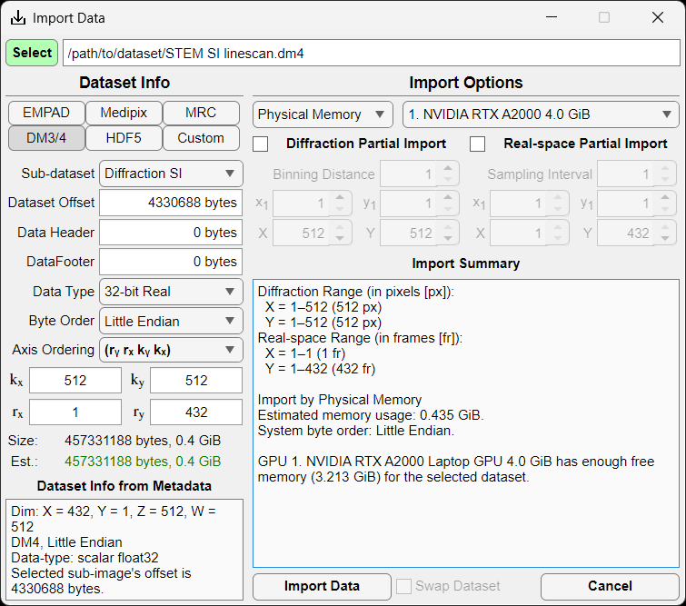

Graphical user interface
The graphical user interface (GUI) allows for intuitive interactions with 4D-STEM data. The GUI consists of two main windows and several other windows as needed, as described below.
Import Window
The import window allows the user to import several common file formats (EMPAD, Gatan, Medipix, MRC, HDF5) as well as any file format for which the user knows the file structure.
.rawfiles are assumed to be in the EMPAD file format with 128x128 detector frames separated by a 1024 byte footer..dm3/.dm4,.hdf5, and.hspyfiles are scanned allowing the user to select the correct dataset..mibfile metadata are scanned for the relevant parameters.
Parameters
Sub-dataset: Choice of dataset in hierarchical datasets such as
.hdf5,.hspy, and.dm3/.dm4files.Data offset: Offset to the start of the 4D-STEM dataset in bytes.
Data header: Header data size in bytes repeated before each contiguous chunk of data.
Data footer: Footer data size in bytes repeated after each contiguous chunk of data.
Data type: Data type of the 4D-STEM dataset (8-, 16-, 32-, or 64-bit; signed integer, unsigned integer, or floating point)
Byte order: Big or little endian ordering.
Axis order: Order of the data axes as saved on disk. kx and ky represent detector axes (i.e. camera pixels); whereas, rx and ry represent the scan axes (i.e. real space probe positions). Default is (kx, ky, rx, ry) where detector images (kx, ky) are contiguous in memory.
Pixels (x,y): Number of detector pixels in each diffraction pattern.
Frames (x,y): Number of probe positions.
File information
Size: Actual file size in GiB.
Estimated size: Estimated dataset size in GiB based on the above parameters. If the two agree, the text will be shown in green; if not, it will show in red.
Dataset Info from Metadata: Information automatically detected from the file metadata.
Import Options
Memory: Physical Memory reads the dataset into RAM (assuming there is sufficient memory available); Virtual Memory generates a memmapfile for lazy loading. Virtual memory option is only available for contiguous datasets (i.e. no frame headers or footers), and is not particularly efficient on Windows systems.
GPU: Selected CUDA-capable GPU (if available with sufficient memory).
Diffraction Partial Import: Bin and/or crop each diffraction pattern.
Real-space Partial Import: Subsample and/or crop the 4D-STEM dataset probe positions.
Import Summary: Summarized import options.
Preview Window
{kind=link}
Upon file selection, but before clicking Import Data in the Import Window, the user can view individual frames from the dataset to ensure that the file parameters are correct. If parameters like header, footer, offset, or data type are incorrect, frames will display incorrectly especially further into the dataset. Preset buttons are available for the first, middle, and final probe positions in x and y, and the user can enter any given probe position as desired. Image statistics automatically update and the user is given access to image display controls (brightness/contrast/gamma).
Main Window
The main window of the GUI has several different pages with mode-specific controls. The pages are as follows:
Import Preview: for previewing individual diffraction frames before importing the entire dataset.
Alignment: fit and calibrate transmitted beam centering and radius, including automatic alignment procedure.
Annular/Round: control simple annulus mask for BF/DF imaging.
Segmented (DPC): generate a segmented annular/round detector and compute DPC-related images.
Center of Mass: compute CoM-related images from an annular/round detector mask.
Virtual Aperture: control a round virtual aperture with rotational and/or mirror symmetry operations.
Custom Detectors: generate any number of additional detector masks or import your own from file.
Settings Window
Display Tab
{kind=link}
Image: Currently selected image window. Dropdown allows selection of any currently available image window.
Show image: Bring currently selected image window to the front (or show if currently closed).
Image lock: Lock current image window selection; helps keeps focus on image statistics for the selected image window.
Colormap: Change the displayed colormap for the selected image window.
Invert: Invert selected colormap.
Image stats: Statistics for the currently selected image window.
Histogram: Display histogram for currently selected image window. Allows for interactive brightness/contrast and log/linear view.
Brightness/Contrast/Gamma: Controlled via sliderbar or numerical input; reset via the icon at the left.
Mask: Modify mask opacity used on currently selected image window (i.e. diffraction pattern mask or real-space ROI). Display mask via icon at the left.
Windows Tab
{kind=link}
Show image windows: Show image window or bring to front (i.e. if closed or hidden).
Vector sampling: Add vector arrows to real-space images in DPC or CoM modes. Modify vector density/sampling and color. Show vector colorwheel.
Window size and orientation: Set image window size in real or diffraction space; define x,y orientation (i.e. origin location); rotate image; show/hide axes on image.
Misc Tab
{kind=link}
Calculation Policy: Active automatically updates all image displays as the user interacts with the GUI; Reduced updates all image displays after the user is finished interacting with the GUI; Passive only updates image displays when the user clicks the Refresh button on the Main Window.
Detector coordinate options: Polar or cartesian coordinates; locations displayed in absolute or relative to transmitted beam center; pixel or angular units.
Swap byte order: Swap big endian <-> little endian in case incorrectly selected on import. Done in memory to avoid having to reimport the data.
Swap Diffraction/Real-space X/Y: Swap x,y axes for diffraction and/or real-space in case incorrectly selected on import. This is most useful for non-square datasets and CoM/DPC. Done in memory to avoid having to reimport the data.
Info and Variables Tabs
{kind=link}
Dataset info: All information and parameters used for the currently loaded dataset.
Show all variables: Display all important variables, constants, and UI elements on Variables Tab.
Variables Tab: Variables tree view allowing the user to view the value of and relative path to all of the important and relevant variables. Top level tree nodes are first level children of the
app. For example, theColorWheelwidow listed under thefiguresnode can be found atapp.figures.ColorWheel. All variables are displayed read-only at this point.
Image Windows
{kind=link}
Individual windows are created for all images, including diffraction space,
real-space, ROI masks, and vector colorwheel. All image windows that view the
same space respond simultaneously to any changes in zoom and pan to unify their
field of view. All image windows come with a toolbar  in the
upper righthand corner that allows the user to export (save, copy, or copy as
vector graphic), query pixel intensities, pan, zoom in/out, and reset the field
of view.
in the
upper righthand corner that allows the user to export (save, copy, or copy as
vector graphic), query pixel intensities, pan, zoom in/out, and reset the field
of view.
Save/Export Window
The Save/Export window allows users to save images or export a cropped and/or binned subset of the original 4D-STEM dataset.
Save Images Tab
{kind=link}
The Save Images Tab displays all images available for saving for the current imaging mode. The user can select a filename prefix that will be prepended to all images selected for saving. Additionally, annular collection angles can be added to the filename, if desired. Multiple images can be selected by holding ctrl whilst clicking, while holding shift will select a continuous range of images for saving.
Raw data: data will be saved in the same intensity units and pixel density as the original dataset in single precision TIFF file format.
As-displayed: data will be saved as-displayed on the screen in PNG file format
with annotations: PNG files will include all visible image annotations (i.e. detectors, ROIs, axes, etc.)
DPI: user-defined dots per inch resolution of the PNG file (default 72 DPI).
Export Dataset Tab
The Export Dataset Tab allows the users to export the dataset as HDF5
(.h5) or raw binary (.raw) format with options for selecting smaller ROIs in
the diffraction and/or real-space dimensions. The output file dimensions can
optionally be appended to the filename for convenience.
Diffraction Partial Export: diffraction space can be binned to reduce file size; an ROI can be selected by changing the starting location (x1, y1) and the total number of pixels (X, Y).
Real-space Partial Export: real-space can be subsampled to reduce file size; an ROI can be selected by changing the starting location (x1, y1) and the total number of pixels (X, Y).